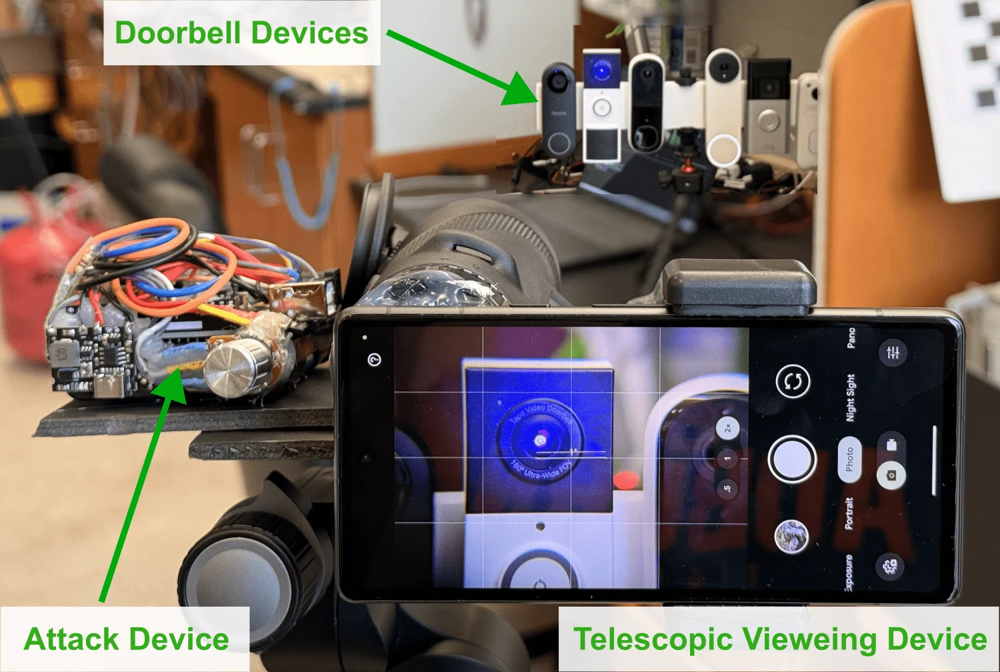
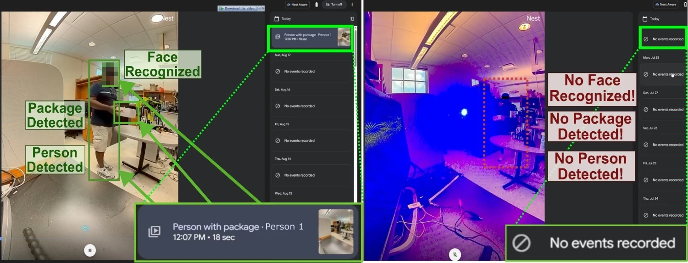
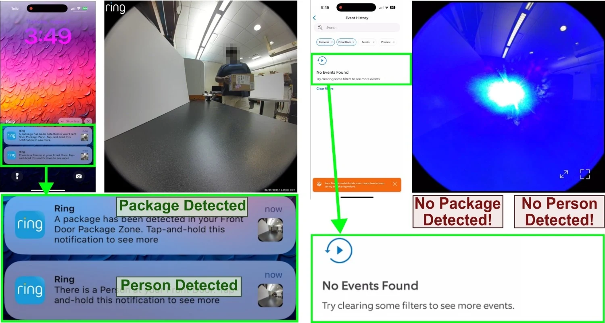
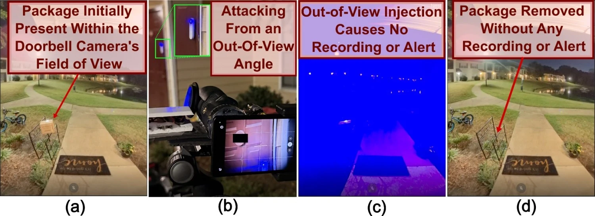
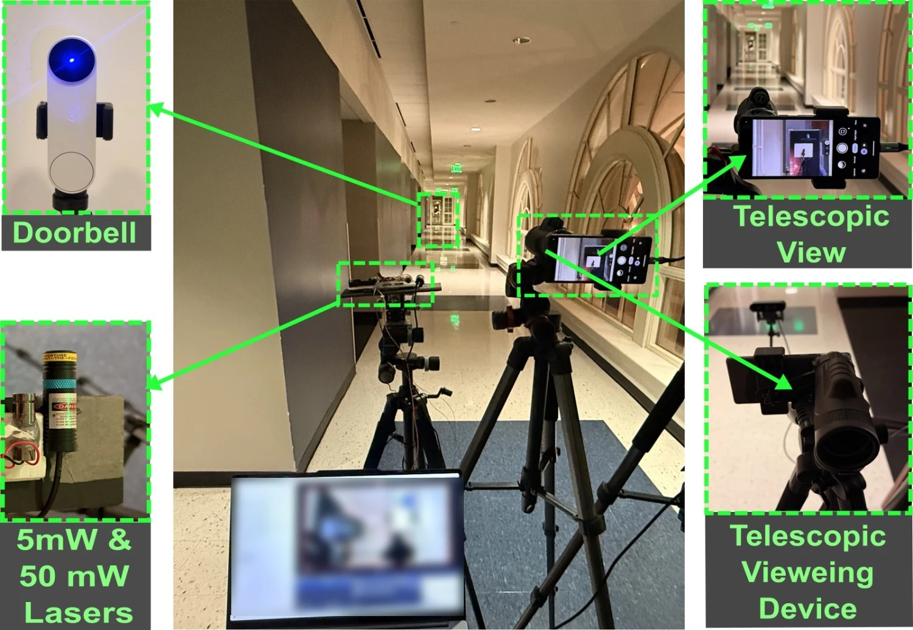
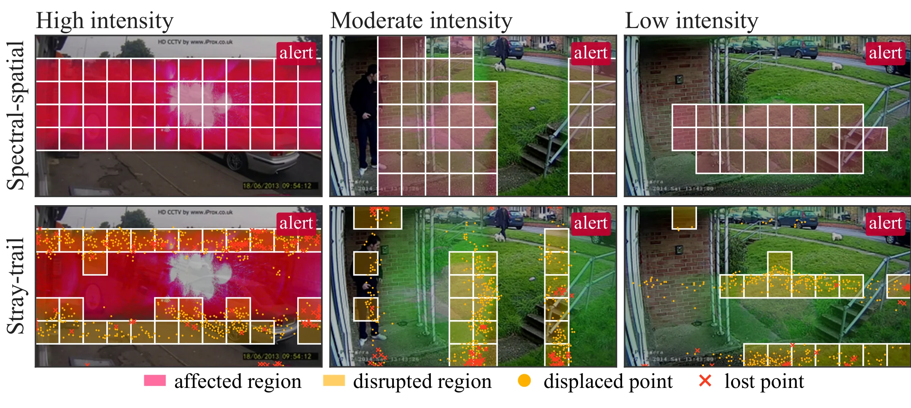
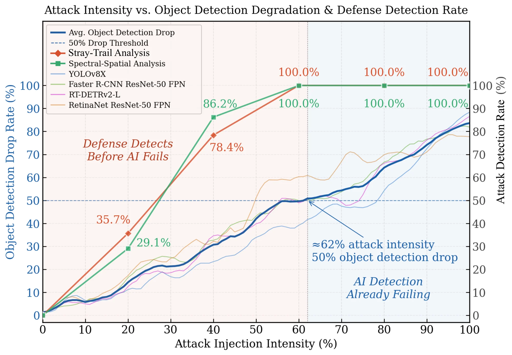
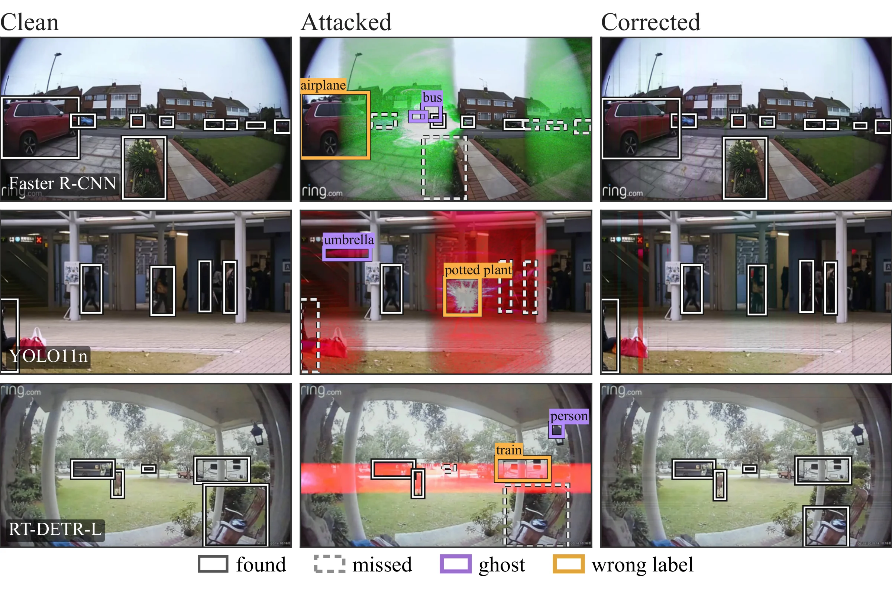

StrayScope
Harnessing Adversarial Optics to Mitigate Optical Injection Threats and Harden Visual Perception Systems
A laser aimed at a camera's lens can make a smart camera miss the person, package or face in front of it while the camera stays online. StrayScope finds the injected light's traces in the camera's own video, detects the attack, and corrects the affected regions before any perception model sees the frame.
- No training data
- One camera, no extra sensors
- No clean reference video
- Independent of the perception model
- Original frame rate kept
Each demo plays the same moment three times: the clean video, the attacked video, and the attacked video after StrayScope's correction, each with the perception model's output. Errors are judged against the model's own output on the clean video. All corrections on this page use only the current and earlier frames. Browse all demo videos.
The threat
A 5 mW laser makes smart cameras miss what is in front of them
Smart cameras and video doorbells run object detectors on their video to decide when to record and notify. We tested nine devices from six manufacturers. A laser held on the lens (static injection) stopped every device from reporting people, faces, packages and motion in every feature we tested, and none of them reported anything unusual. A laser switched on and off fast enough to paint colored bands across a rolling-shutter sensor (rolling-shutter injection) defeated most features as well.
Which detection features failed

What the devices' own apps report





Optical injection
What the injected light looks like to the sensor
Most consumer image sensors read their rows one after another. A laser that blinks during the readout lights some rows and not others, so it appears as colored bands that move as the timing drifts. Light that scatters and reflects inside the lens adds glare and fine streaks that do not belong to the scene.
These clips are real recordings of our laser rig shining into a camera that faces a black screen. An attacker controls the number of bands, their width and brightness, and how they move.
Method
Reading the injected light's traces in the camera's own video
Injected light reaches the sensor along paths that scene light never takes. It does not raise the colors evenly across the frame, and it creates, moves and erases small image structures that the scene does not explain. StrayScope measures both effects with classical signal processing, and then uses those measurements to rebuild the affected parts of each frame. Nothing is trained, and nothing about the downstream perception model is used.
- Optical injectionThe sensor records scene light mixed with injected light.
- Adversarial optics analysisSpectral-spatial and stray-trail analyses locate the injection and measure how it moves.
- Signal processingSpace-time reconstruction rebuilds the affected regions from nearby frames of the same stream.
- Corrected dataSame resolution and frame rate as the camera output.
- Perception modelsAny detector, segmenter, face or pose model, or vision-language model runs unchanged.
Adversarial optics analysis
Spectral-spatial analysis
The lens spreads the injected light unevenly, so it raises the color channels by different amounts in different places. StrayScope divides each frame into regions and compares each region with its own normal color, learned from a short attack-free calibration window. A region is affected when its strongest channel rises above a threshold set from that channel's response to injection.
A finer per-pixel score combines color increase and color dominance and traces the outline of the affected area. The outline is often curved: wide-angle cameras correct their lens distortion, and that bends the bands.
Paper figures: regional localization, pixel-level contour.
Real laser, recorded through the camera. Top: the attacked frame and the outline of the pixels the injected light reaches. Bottom: each region's rise above its normal color; bordered regions are above the threshold.
Adversarial optics analysis
Stray-trail analysis
Stray light also creates, shifts and erases fine image structure. StrayScope tracks corner points from one frame to the next and counts, in each region, the share of points that jump farther than a set distance or disappear. In a stable scene that share stays near zero; a passing band drives it up. The count uses gray levels only, so it does not depend on the laser's color.
The directions in which the disrupted points move, together with the drift of the affected regions, give the band's sweep direction and speed.
Paper figures: stray trails, sweep direction.
Top: corner points tracked between consecutive frames; trails mark points the band displaced, crosses points it erased. Bottom: the share of disrupted points per region, bordered above the threshold, and the measured sweep direction.
Signal processing
Space-time reconstruction
A moving band covers each place only part of the time. StrayScope refines the affected regions into fine tiles along the band and, for each tile, searches nearby frames of the same stream for an observation of that place with little injection left. Candidates are scored by the injection they still carry and by how far away they are in time; a tile keeps its own content when no candidate passes. Tiles along the band share a source, so neighboring pieces stay consistent.
Every input frame gets a corrected frame, so the video keeps its frame rate. The corrected video is handed to the perception models in place of the camera output.
One image column followed over time (a space-time trace). Under attack the moving bands draw diagonal streaks; after correction the trace shows the scene again.
One frame, step by step

Detection
Both analyses raise an alert across cameras, colors and intensities
Instead of failing silently, a camera can raise an alert. Each analysis raises one when enough regions are affected at once; the settings stay fixed for every camera, scene and attack. The evaluation covers 900 attacks made by overlaying patterns recorded from real cameras onto 50 scene videos, 20 attacks captured physically on doorbells and a USB camera, and 50 attack-free videos with traffic, foliage, people and lighting changes.
By attack pattern and intensity
| Attacks | Videos | Spectral-spatial | Stray-trail |
|---|---|---|---|
| Horizontal rolling bands | 300 | 97.3% | 100% |
| Vertical rolling bands | 150 | 98.7% | 100% |
| Static, right side | 300 | 98.7% | 98.0% |
| Static, left side | 150 | 100% | 99.3% |
| High intensity | 300 | 99.3% | 99.7% |
| Moderate intensity | 300 | 99.3% | 99.7% |
| Low intensity | 300 | 96.7% | 98.3% |
| Physical attacks | 20 | 100% | 100% |
Across cameras
| Cameras | Videos | Spectral-spatial | Stray-trail |
|---|---|---|---|
| Video doorbells (6) | 216 | 84.9% | 99.5% |
| Outdoor CCTV (3) | 108 | 91.9% | 99.1% |
| Smartphones and webcams (4) | 144 | 91.2% | 100% |
| All 13 cameras | 468 | 88.5% | 99.6% |
The same parameters detect every attack in the same videos converted to 480p, 720p, 960p and 1080p.

Before the attack works, the alert is already up
As the overlay intensity rises, object detection degrades; the four-detector score drops to half its clean value at about 62% intensity. At 40% intensity the two analyses already detect 86.2% and 78.4% of the attacks, and both are near 100% by 62%.
An attacker who ramps the laser up slowly, hoping to stay below the threshold, is caught at a mean of 21.3% intensity across 24 ramped attacks with two- and three-color lasers, every one of them before the 62% point.

Perception models
Perception models work again on the corrected video
Each model is scored against its own output on the clean video, so 100 means it sees exactly what it would see without the attack. A detection counts only when its class matches and its box overlaps the clean box with an intersection-over-union of at least 0.5; missed objects and extra ones both lower the score. Within a task, every model receives the same corrected videos, and nothing in the correction is tuned for a model.
Five detector architectures, 36 attacked videos
Two-stage, single-stage and transformer detectors all recover. Across the five, the mean score rises from 38.2 to 56.5, and 172 of the 180 detector-video pairs improve. The gain holds for horizontal bands, vertical bands, and bands that change speed and direction within a clip.

Mask R-CNN, 36 attacked videos
Under attack, Mask R-CNN loses people and cars, distorts their outlines and adds spurious masks over the background. After correction, missed instances fall from 156,902 to 87,927 and spurious ones from 72,388 to 64,165. The mean score rises from 38.4 to 54.0 and improves on 34 of the 36 videos.
Face detection and face recognition
Face detection was the feature that failed most consistently on the commercial doorbells. On ten attacked clips, YuNet finds 58.8% of the faces it finds in the clean video; after correction it finds 88.7%, and every clip improves.
Recognition needs more than a box: the facial detail that tells people apart. With identities enrolled from the clean video, SFace's identity score rises from 48.4 to 91.9, on all five clips.

Pose estimation on people in motion
Pose is the hard case for any reconstruction over time, because limbs move between observations. On 15 clips of people dancing, exercising and running, YOLO11n-Pose's score rises from 36.6 to 72.3 and improves on every clip. Among matched people the joints also land closer to their clean positions: the keypoint similarity rises from 0.743 to 0.804.
Vision-language models
Qwen3-VL-30B-A3B and InternVL3-38B watched the same 36 attacked and corrected videos. Five fixed questions ask whether a person, package or vehicle is present, how many people there are, and what the main subject is; answers are compared word for word with each model's answers on the clean video. Correction raises the share of matching answers from 85.0% to 92.2% for Qwen3-VL and from 81.7% to 88.3% for InternVL3.
For open scene descriptions, a judge model compares each description with the same model's clean description for accuracy, completeness and relevance. Scores rise from 72.9 to 78.8 and from 74.0 to 81.2.
Physical attacks
Real lasers, recorded through a real camera
To test the full optical path, a webcam films a monitor playing the scene videos while a modulated laser shines into its lens. The bands now come from the camera's own lens, sensor readout and image processing, not from an overlay. We recorded 111 attacked videos in blue, green and red, each with a matched laser-off recording as the reference.
Every object detector improves under each of the three laser colors, and Mask R-CNN improves overall. Face detection improves on all 30 recordings and face recognition on all 15. The two vision-language models also give more answers that match their laser-off answers (92.8% to 94.4% and 88.3% to 90.0%) and better descriptions (75.0 to 77.9 and 77.1 to 80.7).
Stress tests
Attacks designed to slip past the analyses
Mixing laser colors
Injecting two or three colors at once could hide which channel dominates. Across all four color combinations on six scenes, both analyses detect every attack: imperfect sources and uneven paths inside the lens still leave channel imbalances, and stray-trail analysis ignores color altogether.
Ramping the intensity slowly
Raising the laser from zero detects at a mean of 21.3% intensity, before the attack does real damage to object detection.
Day to night
With the baseline taken in daylight and the attack after nightfall, the analyses detect 88.8% of attacks and raise no false alarms from the lighting change.
Dim, narrow, jumping and erratic bands
We recorded five more patterns on the laser rig: a dim band, a narrow band, a band that jumps between two places, a band that moves fast between them, and a band with irregular speed and direction. Overlaid on 20 pose and face videos, every one is detected by stray-trail analysis within 0.2 s of its onset.
| Stress test | Attacks | Result |
|---|---|---|
| Two and three laser colors at once | 24 | 100% detected by each analysis |
| Intensity ramped up from zero | 24 | all detected, at 21.3% intensity on average |
| Daylight baseline, attack at night | 18 | 88.8% detected, no false alarms |
| Dim, narrow, jumping, fast, erratic bands | 20 | all detected within 0.2 s (stray-trail) |
| Same attacks at 480p to 1080p | 40 | all detected, same settings |
Responsible disclosure
The manufacturers were told
We reported the silent failures to each manufacturer in October 2025, with the products affected and the features that could be suppressed. All experiments used our own devices in controlled settings, with curtains, signage and timing chosen to keep bystanders away.
- GoogleAccepted, rated moderate severity, reward issued; later closed as infeasible to address.
- ArloValidated as a vulnerability, reward issued; marked unresolved.
- Ring (Amazon)Triaged, reward issued; described the risk as accepted industry-wide.
- Reolink and TP-LinkAcknowledged the reports.
- WyzeNo response.
Artifacts
Code, data and every video on this page
- Spectral-spatial analysisDetector source code (anonymized repository).Open repository
- Stray-trail analysisDetector source code (anonymized repository, named Environmental-Mapping-Analysis-System).Open repository
- Dataset and resultsAttack videos, corrected videos and evaluation outputs (anonymized dataset).Open dataset
- Demo videosEvery demo as a side-by-side video with model outputs, plus the clean, attacked and corrected streams on their own.Open gallery
Figures from the paper
Questions reviewers ask
Does StrayScope need a clean copy of the video?
No. It learns each region's normal color from a short attack-free calibration window and needs nothing else from a clean video. In the simulated videos that window is the opening frames; the physical recordings start with the laser already on, so their calibration frames come from the opening of the matching laser-off recording. The clean video shown in the demos is there only so you can compare.
Is anything trained?
No. Both analyses and the correction are signal processing with fixed settings. There are no labeled attack examples and no network weights, and the detection settings are the same for every camera and scene in the evaluation.
Does the correction use the perception model?
No. The correction runs before any perception model and never sees a model's output. The same corrected videos serve all five object detectors, Mask R-CNN and both vision-language models; the face and pose videos are corrected the same way.
Can it run on a live stream?
Yes. The correction can draw only on the current and earlier frames, and every demo on this page was produced that way. Each input frame gets a corrected output, so the frame rate is unchanged. On a Raspberry Pi Compute Module 5, spectral-spatial analysis takes 8.2 ms per 960×1280 frame and stray-trail analysis 86.2 ms.
What if the attacker changes the color, intensity or pattern?
Mixed laser colors, slowly ramped intensity, a day-to-night baseline change, and dim, narrow, jumping and erratic bands are all in the stress tests. The detection settings stay fixed throughout.
How are the scores computed?
Each model's output on the clean video is the reference. A prediction matches when its class agrees and its box overlaps the reference box by an intersection-over-union of at least 0.5; each reference matches once. The score is 100 × matches / (matches + extra predictions + missed references). Faces must also keep their identity, and poses are matched by object keypoint similarity.
Are the attacks in the demos real?
Two kinds appear. Demos marked "Real laser" are recordings of a modulated laser shining into a camera while it films the scene on a monitor. The others overlay laser patterns recorded from real cameras onto the test videos, as in the paper's main evaluation; this lets the same scene be attacked with many cameras, colors and band motions.